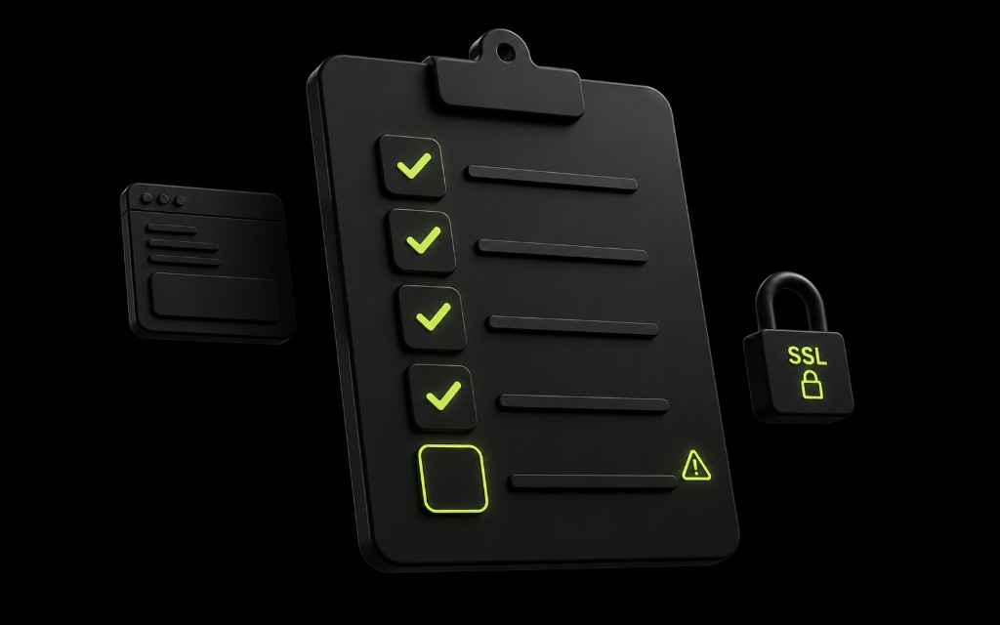

Зачем чеклист, а не «ещё чуть-чуть»
Перед релизом почти каждая команда делает одно и то же: дорисовывает hero, правит отступы и переносит запуск «на завтра». В Ташкенте мы регулярно видим красивые лендинги, которые не продают: форма молчит, аналитика пустая, а менеджер узнаёт о заявке из скриншота в личке. Чеклист нужен не для бюрократии — он отделяет рабочий сайт от макета с доменом.
Для бизнеса в Узбекистане цена ошибки высокая: реклама в Telegram и поиске идёт сразу, а разбирать «почему нет заявок» под горящим бюджетом — дорого. Ниже порядок, который мы используем в getsite: сначала заявки и CRM-канал, потом аналитика, потом техника домена и только в конце визуальные мелочи.

День −1: заявки должны доходить
Сайт без работающей формы — витрина. Отправьте тестовую заявку с реального телефона (не с ноутбука разработчика), с мобильного интернета и с Wi‑Fi. Проверьте, что уведомление приходит в Telegram-бот или на почту тому человеку, который отвечает клиентам. Если письмо улетело в spam или бот молчит ночью — это уже критический блокер.
- Тест с Android и iPhone: кнопка «Отправить» кликабельна, нет ложной валидации.
- Сообщение содержит имя, телефон, услугу и UTM/источник, если реклама уже подключена.
- Страница «спасибо» открывается и не отдаёт 404 после деплоя.
- Менеджер видит заявку в одном канале, а не в трёх чатах параллельно.
Отдельно проверьте таймзону и формат телефона: +998 и локальный ввод часто ломают маски. Если форма «молчит» на мобильном — чаще виновата валидация или JS, который не подгрузился из‑за CSP/блокировщика.
Аналитика: визит, событие, источник
SEO и скорость сайта бессмысленны, если вы не видите, откуда пришёл человек и что он сделал. Минимум на запуске: счётчик установлен, pageview есть, событие отправки формы срабатывает, и в отчёте виден UTM. Без этого через неделю вы будете спорить о «качестве трафика», не имея цифр.
Не откладывайте аналитику «на потом». В первую неделю после релиза вы принимаете решения по рекламе и тексту лендинга — без данных это угадайка. Проверьте, что тестовые события не затерялись в фильтре ботов и что цель в Метрике/аналоге привязана к реальной кнопке, а не к старому селектору.
Домен, SSL и редиректы
Классика последнего дня: сертификат протух, www и без www открывают разные версии, Mixed Content ломает шрифты. Пройдитесь по продакшен-URL с телефона вне офиса. Убедитесь, что HTTP → HTTPS без циклов, favicon на месте, и Open Graph-картинка открывается — иначе в Telegram и Facebook превью будет пустым.
- Откройте сайт по основному домену и по www — одна каноническая версия.
- Проверьте SSL и отсутствие предупреждений в браузере.
- Клиентская 404-страница существует и ведёт обратно на главную или услуги.
- Ссылки в шапке, футере и кнопках CTA ведут на актуальные якоря после правок.
Мобильный UX и скорость
Большинство заявок в Ташкенте приходит с телефона. Если hero весит 3 МБ, кнопка уезжает за экран, а форма прячется ниже трёх экранов копирайта — вы платите за клики в пустоту. Перед запуском откройте ключевые экраны на узком телефоне: без горизонтального скролла, с читаемым текстом и одним очевидным действием.
Скорость сайта проверяйте не «на глаз», а по факту: картинки в WebP/compressed, lazy для ниже фолда, шрифты без лишних начертаний. Если LCP тормозит из‑за фонового видео — уберите его на первую неделю. Красота не окупает потерянные заявки.
Когда не надо запускать
Не запускайте трафик, если красный хотя бы один критический пункт: форма, уведомление менеджеру, SSL, или аналитика события заявки. Лучше сдвинуть релиз на день, чем чинить воронку под оплаченной рекламой. Визуальные правки, новый блок «о нас» и идеальный футер — не повод держать сайт закрытым, если ядро продаж уже работает.
После публикации заведите короткий пост-релизный список: кто отвечает за первую неделю, куда писать, если форма упала, и как часто смотреть аналитику. Запуск — не финиш, а старт нормальной работы лендинга для бизнеса в Узбекистане.
Реклама и запуск в один день — отдельный риск
Частая схема в Ташкенте: сайт «уже почти», а реклама в Telegram и поиске запускается вечером «чтобы не терять день». В итоге бюджет идёт в кривую форму, битые якоря и страницу без SSL. Договаривайтесь явно: пока чеклист красный, платным трафиком не тратим. Это не педантизм — это защита денег.
Если реклама уже куплена и перенос невозможен, оставьте узкий канал: одну рабочую кнопку в Telegram-бот и короткий лендинг-заглушку с оффером. Лучше простой сценарий заявок, чем красивый сайт, который молчит. Параллельно чините основную форму и аналитику.
Проверьте UTM на каждом объявлении: иначе через неделю SEO, таргет и сарафан смешаются в одну кучу, и вы не поймёте, какой канал приносит бизнес в Узбекистане. Метка в уведомлении менеджеру экономит половину созвонов «а откуда клиент».
Отдельно про ночные заявки: кто отвечает после 20:00? Если никто — напишите это в автоответе бота. Ожидание без ответа убивает конверсию сильнее, чем средний дизайн. Заложите дежурство хотя бы текстом «ответим утром до 11:00».
Финальный прогон перед включением рекламы: три тестовые заявки разными людьми, скрин успешного уведомления, скрин события в аналитике, проверка домена с мобильного вне офиса. Положите это в чат проекта — будет точка отсчёта, если «внезапно всё сломалось».
Роли на запуске и первая неделя
Назначьте владельца релиза: человека, который говорит «едем» или «стоп». Рядом — владелец заявок (продажи) и владелец техники (домен, деплой). Без ролей чеклист превращается в общий чат, где все «почти проверили». В getsite мы явно фиксируем, кто жмёт кнопку рекламы только после зелёных пунктов.
В первую неделю смотрите не красоту, а стабильность: форма стабильно доходит, аналитика не молчит, скорость сайта на мобильном приемлемая, 404 не растут. Заведите короткий ежедневный статус в рабочем чате — пять строк. Это дешевле паники в пятницу вечером.
Если что-то красное после релиза, сначала чините воронку, потом визуал. Новый блок «партнёры» подождёт. Клиент в Ташкенте сравнивает вас с теми, кто отвечает за десять минут — не с теми, у кого идеальный градиент в футере.
- День 0: финальный прогон чеклиста и скрины успешного теста.
- День 1–3: ежедневная тестовая заявка и взгляд в аналитику источников.
- День 7: разбор — что сработало в оффере, где отвал, что правим в тексте.